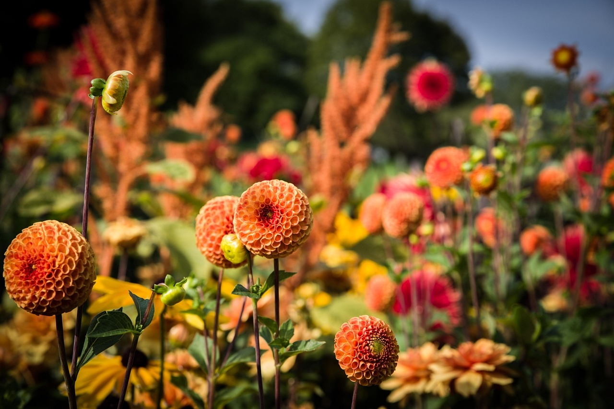

Welcome to the Greenhouse Guide
Your go-to resource for plant care and gardening tips.
Explore Our Plant Collection
Discover a variety of plants and learn how to care for them.
Watering: "Low" means minimal watering once established; "Moderate" means regular but not excessive watering. Adjust based on your local climate.
Height/Spread: Ranges reflect common cultivars; check specific varieties at your nursery.
Deer Resistance: "High" means rarely eaten, "Moderate" means occasionally browsed if food is scarce. No plant is fully deer-proof, but these are widely recognized as resistant.
Zones: These are USDA hardiness zones; ensure they match your location (or use as annuals if outside the range).